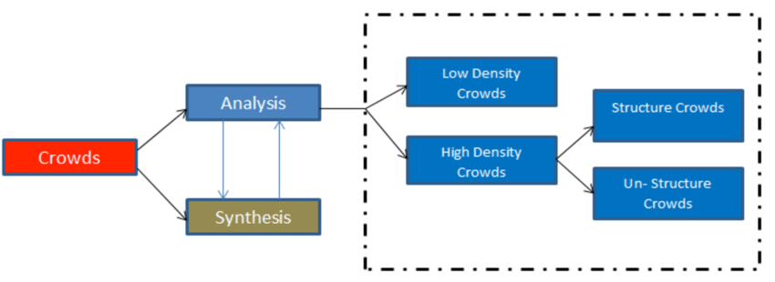

Based on my research We can use pre-trained convolution neural network and long short-term memory network to estimate the crowd density from the any kind of data. CNN and LSTM network are two sorts of the neural network framework.Tensorflow hosted different kind of classification models with differnet size of data inputs. 
There are some standard pre-trained classification models available. So we don’t need to create our model from scratch. we can use that model by changing the output layer. Pre-trained model which usually contains two parts the first part is used for feature extraction and the second part is used for classification tasks, which contains a fully connected layer and a softmax layer at the end.we need to reuse the feature extraction part and need to retrain the classification part. Usually, in convolution neural networks, every output channel is connected to every input channel densely. By conducting repeated forward and backword propogation(epochs) we will get better accuracy.
Lots of image data available on the web.
Find lots of articals and online tutorials which helps us to understand complex deep learning models architectures.
Trouble counting people in large crowds due to more occlusion and overlapping people.
If the density of the crowd exceeds that predefined limit, some congestion may occur in that scene. So in that case model can not able to pridict accurately.
Not able to decide the range of each class like How many people could be a low-density crowd? Medium-density? High density? Detecting and classifying large crowds can be difficult.
Hard to decide which pre-trained model will be going to used and what could be the input data size.